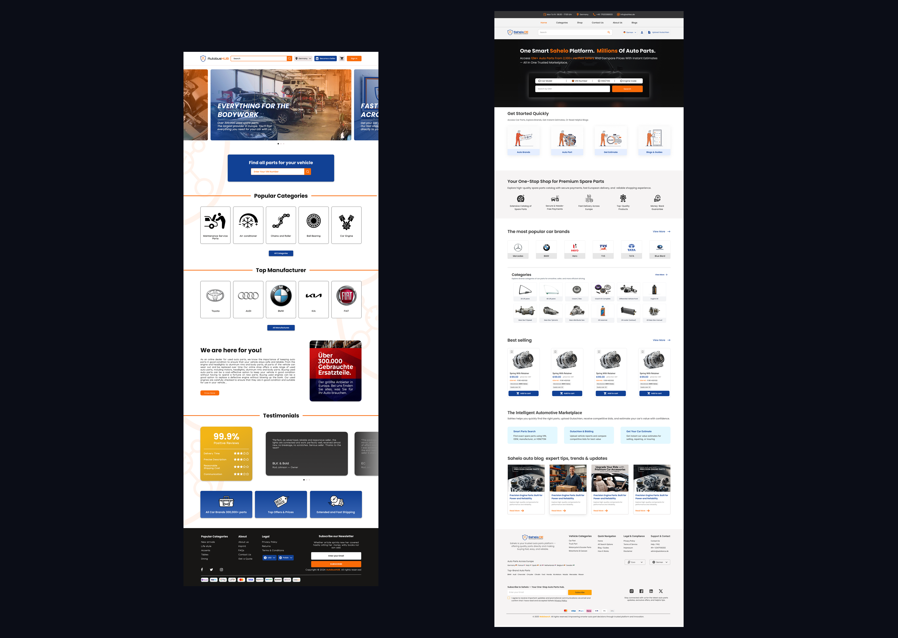

Sahelo — Auto Parts E-commerce Redesign
Redesigning an auto-parts e-commerce platform to improve usability, trust, and product discovery across a complex automotive catalog — for new and second-hand parts.
Sahelo — redesigned homepage, desktop view
Introduction
Sahelo is an auto-parts e-commerce platform where users can purchase both new and second-hand car parts. The project focused on redesigning the platform to improve usability, trust, and product discovery across a complex automotive catalog.
Real-world context — Sahelo on mobile
The Problem
The existing platform had major usability and trust issues that were directly hurting conversions and user confidence:
- No clear search system for finding parts — limited to basic keyword only
- No VIN, engine code, or OEM input support
- Poor category visibility — users didn't understand what products were available
- No alternative product suggestions when exact parts were unavailable
- Broken pages and dead links directly affecting user flow and conversions
- Filters not aligned with real user search goals
- Lack of trust signals — no delivery clarity, pricing transparency, or tax info
- Checkout flow unclear and error-prone — leading to abandoned orders
Core Issue
The experience felt unstructured, unreliable, and difficult to use — failing users at every critical touchpoint from search to checkout.
Existing Sahelo UI — unstructured, unreliable experience
Existing Sahelo UI — unstructured, unreliable experience
Research & Insights
Methods used:
- User behavior analysis using Google Analytics 4
- Drop-off and session tracking
- Stakeholder discussions for business context
- Competitor benchmarking across 5+ auto-parts platforms
- Review of past internal data and sales patterns
Key Findings
1. Users dropped off mainly at search and category pages — the two most critical flows.
2. High cognitive load due to unclear navigation and unstructured product listing.
3. Users wanted multiple ways to search — not just one keyword field.
4. Trust issues came from missing delivery timelines, tax info, and unclear pricing.
5. Broken links directly impacted conversions — users hit dead ends and left.
6. Marketing campaigns were less effective due to a poor landing experience.

Drop-off analysis — search and category pages were the biggest pain points
The Solution
A structured, search-first e-commerce experience focused on clarity, trust, and guided navigation — eliminating every known friction point.
- Introduced multi-input search system (VIN, OEM, engine code, model)
- Simplified and restructured category navigation
- Improved product discovery with "You may also like" alternatives
- Fixed broken flows — zero dead links in final design
- Built trust through transparent delivery, pricing, and tax information
- Aligned filters with real user search behavior
- Added GDPR compliance for European users
- Redesigned checkout flow — clear, step-by-step, error-free

Sahelo redesign — structured, search-first e-commerce experience
Core Features
- Multi-search functionality: VIN, OEM, engine code, gearbox code, car model + global search
- Improved category visibility: Clear product grouping and navigation
- Alternative suggestions: "You may also like" and compatible products
- Dead link resolution: Clean, error-free navigation throughout
- Product validation cues: Indicators to verify compatibility before purchase
- Gutachten upload support: For validated automotive parts (European compliance)
- Seller login / registration: Based on client requirements
- Improved filters: Aligned with real user search behavior
- Clear delivery & pricing info: Including tax and delivery timelines
- GDPR compliance: For European users
- Trust signals: Footer navigation, contact details, structured layout
User Flow (Simplified)
End-to-end redesigned user flow — search to checkout
Design Decisions
- Search-first approach → matches real user intent — most users know what they need, not how to find it
- Multi-input system → supports different user knowledge levels (expert vs first-time buyer)
- Clear categories → reduces confusion and cognitive load on first landing
- Alternative suggestions → avoids dead-end journeys and keeps users engaged
- Trust-focused UI → delivery timelines, tax clarity, and trust signals improve conversions
- Error-free navigation → no broken links, no dead pages — ensures smooth flow
- Data-driven redesign → every decision grounded in actual GA4 drop-off points

Before — unstructured, unclear experience
Impact (6 Months)
Performance Metrics:
What Changed
↑ Product discoverability — users find the right parts faster with multi-input search.
↓ Drop-offs — reduced abandonment in search and category flows.
↑ User trust — transparent information improved confidence at checkout.
↑ Marketing effectiveness — better landing experience increased campaign ROI.
Learnings
- User behavior tracking with Google Analytics 4
- Understanding user journeys and drop-off analysis
- Basics of API flow and debugging via browser inspect
- Data-driven design improvements
- Designing for complex e-commerce systems
- Reducing cognitive load through structure and clarity
- Aligning filters and navigation with real user intent
- Stakeholder communication and requirement alignment
- Asking the right product and business questions
- Collaborating with developers on feasibility
- Understanding marketing impact on product experience
- Designing for trust is as important as designing for usability
- Data is the best argument for any design decision
- Broken UX isn't just a design problem — it's a business problem
Keep Exploring
Data Dashboard UX Optimization
Standardizing UI patterns, simplifying heavy data layouts, and integrating invoice flows. Reduced core task completion times by 50%.
View Data Dashboard Project